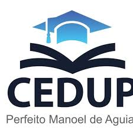
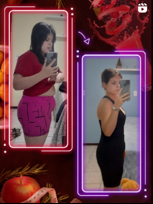

Ela se destacou no segundo ano com o projeto "Dump Tech", uma lixeira que separa lixo reciclável do orgânico. No terceiro ano, ela se juntou a uma nova equipe e criou o projeto "Mapzen", um aplicativo que mostra a localização de clínicas psicológicas, áreas de lazer e receitas saudáveis (sem glúten, açúcar, leite e veganas), focando na saúde física e mental.
Letícia foi inspiração para o projeto por sua própria trajetória: saiu da obesidade grau 2 sem ajuda de nutricionista, personal trainer, remédios ou cirurgias. Ela e sua equipe foram convidadas para apresentar o projeto em uma faculdade de Nutrição e estão se preparando para isso.
Imagem da logo da escola que Letícia estuda.

Imagem do projeto Mapzen.
Imagem dos resultados que Letícia obteve durante sua trajetória, que inspiraram o projeto.